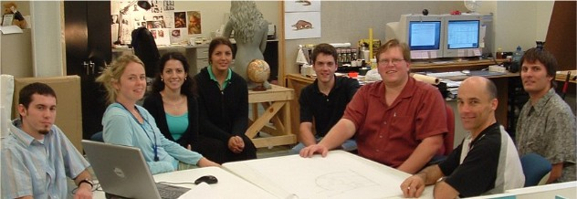
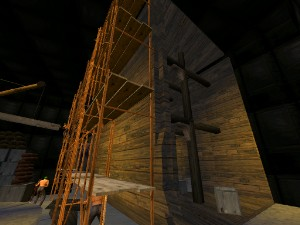
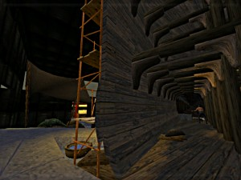
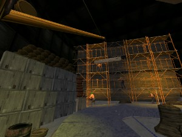
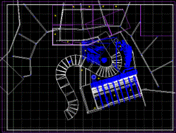

Try out the 3D test scene:
Try out the 3D test scene: A productive time spent with the design team at the AiG Creation Museum in Kentucky, developing exhibit designs for Noah's Ark.

Creation museum exhibit design team. Photo Mike Matthews
The exhibit currently envisaged is a section of the Ark under construction. I'm very happy with the layout that emerged in brainstorming sessions with Patrick Marsh (museum director), Mike Matthews (script writer) and John Taylor (artist).
Two days later a 3D level had been built to trial the exhibit from the viewer's perspective, testing line-of-sight issues and obtaining screenshots for artists to work with. Real-time 3D (using a 3D game engine) allows instant changes, and lets viewpoints be explored interactively. No great level of detail is needed here, the aim is to test the general flow, visibility and position of the structure.
|
Approaching the Ark. Workers on the scaffold are attaching planking. The whole process is illustrated - one man with a hand auger to pre-drill the hole, another hammering the treenails, others cutting off the protruding end, other applying pitch or trimming a plank for fit. |
 |
|
Inside the Ark, looking out. The sectioned hull shows the size of frames and planking. Some early internal work is underway - like dividing walls and storage bins. |
 |
|
Looking back from the end of the "creation walk". A goods depot to the left, a simple but effective crane reaches out over the walkway. On the right workers are making storage containers and various equipment for the voyage. |
 |
|
Plan view in 3D game level editor. Noah's Ark dominates the final section of the creation walk. Questions about the Ark will be addressed using interactive exhibits housed in first room off the walkway. This construction exhibit now covers the area 21 - 23 in the Creation Museum walkthrough. |
 |
Try out the 3D test scene: Needs PC running DirectX 8 or later.
Download museum07.zip (5.8MB)
Files must be extracted (unzipped). Put them wherever you like but both files must stay together (the *.wrs must stay with the *.exe)
Run (double click) the *.exe file.
Use arrow keys and mouse to navigate. F1 for help. Esc to quit.
Don't complain. It's a test scene so use your imagination.